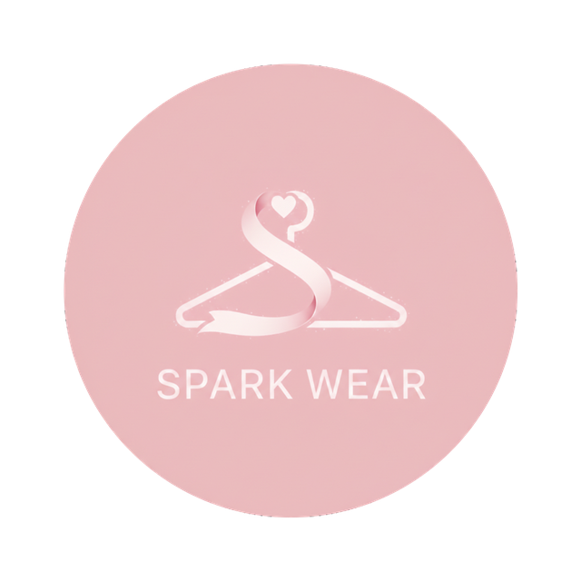
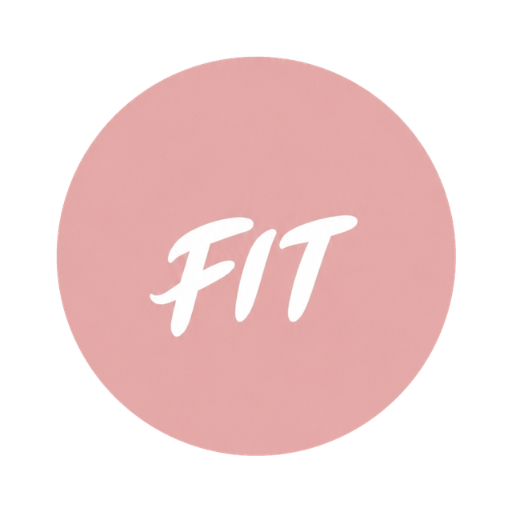
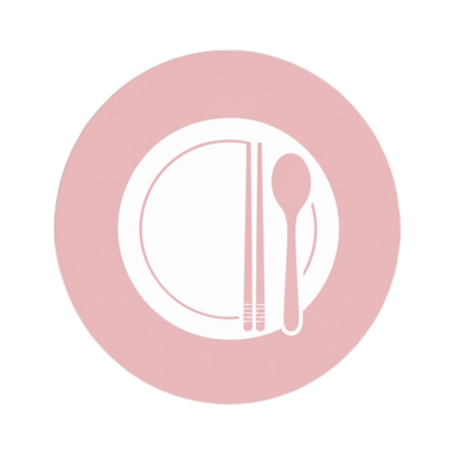

DAY LIGHT
（佔位）DAY LIGHT 誕生於一個想好好記錄心情的午後。Kyo 發現，比起洋洋灑灑的長篇日記，更需要的是一個能在一天縫隙裡輕輕放下幾句話的地方，再加上一點正念的光，照亮那些平凡卻不想忘記的瞬間。
- 每日心情選擇與文字日記記錄
- 一分鐘正念音訊，隨時為自己充電
- （佔位功能項目，待 Kyo 補充）
- 開啟 APP，點選今天的心情圖示
- 在日記欄位寫下幾句話
- 按下「正念」，聆聽一分鐘引導音訊
每一個 APP，都是從生活裡的一個小小願望開始的。找到屬於你的那一款，開始記錄你的日常。
（佔位）DAY LIGHT 誕生於一個想好好記錄心情的午後。Kyo 發現，比起洋洋灑灑的長篇日記，更需要的是一個能在一天縫隙裡輕輕放下幾句話的地方，再加上一點正念的光，照亮那些平凡卻不想忘記的瞬間。

曾經，我也是個擁有 547 件衣服的「購物狂」。
那時候，打開衣櫃不僅沒能帶給我喜悅，反而是一場焦慮。常常買了一模一樣的單品卻不自知，看著滿坑滿谷的衣服，每天早上卻依然覺得「沒衣服穿」。
直到那時，我讀了《斷捨離》和《怦然心動的人生整理魔法》，那一刻，我決定改變。
「整理，不是為了丟棄，而是為了重啟。」
為了找回與物品的連結，我親手打造了 SPARK WEAR。它不只是一個衣櫃管理工具，更是我冷靜消費的「清單」。透過它，在購物之前，我能隨時翻閱衣櫃，確認哪些單品已經足夠，成功地將衣櫃精簡至 110 件左右。
現在，衣櫃不再是負擔，而是我每日穿搭靈感的來源：
單品履歷：透過拍攝穿搭，紀錄每一件單品的使用率，讓被冷落的舊愛重新發光。
趣味排行：我設計了專屬投票系統，自動產出使用率與 C/P 值排行榜。原來，我最常穿的是那件基礎款針織衫，而不是當初失心瘋買的那件毛毛外套。
在這裡，斷捨離不再痛苦，反而是一場關於「品味」的自我挖掘。
SPARK WEAR，邀你一起，讓衣櫃大減重，讓生活更輕盈。
隨著年紀增長，代謝逐漸趨緩，加上生活中上有老下有小，工作壓力接踵而至，體重管理似乎成了這階段最大的挑戰。
為了紀錄努力的痕跡，我一直有拍攝身形紀錄的習慣，但我發現，單純的照片散落在手機相冊裡，很難精確看出變化。如果有一個專屬的工具，能讓我把這些紀錄像日記一樣管理，甚至能直接「並排對比」，那該有多好？
於是，SPARK SHAPE 誕生了。
「看見進步，是堅持下去最好的動力。」
現在，我不再需要憑感覺猜測，只要叫出相簿，過去與現在的對比一覽無遺。這種清晰的軌跡，讓我更有動力去面對生活中的每一項挑戰。

隨著年紀增長，代謝逐漸趨緩，加上生活中大大小小的壓力，體重管理成了這階段的一大難題。
過去，我習慣用 Excel 記錄身體數據，但這畢竟不夠直觀，也很難隨時翻閱。我心想，如果能有一個隨身 App，不只管理數據，還能幫我分析身型、給予穿搭靈感，那該有多好？
於是，SPARK FIT 誕生了。
「數據，是為了讓我們更了解自己。」
這不僅是數字的堆疊，而是與自己身體的一場對話。現在，我不僅能隨時掌握變化，透過圖表看見趨勢，更棒的是，它還會告訴我適合的身型穿搭與避坑建議。每當看到成長，那種被激勵的感覺，成了我持續堅持的動力。

「明明覺得自己吃得很乖，為什麼體重還是不聽話？」
相信這句話，是許多人在體重管理路上共同的困擾。過去，我也曾興致勃勃地下載各種計算卡路里的 APP，但很快就發現：我不想被冷冰冰的數字追著跑，我只是想知道，我今天到底吃了些什麼？
「餐盤，是一日生活的誠實鏡子。」
為了擺脫數字壓力，我打造了 SPARK PLATE。它不追求精準的卡路里，而是用直觀的「九宮格」排列出你的一日三餐。一眼望過去，吃得好不好、原型食物佔比高不高，全都在畫面上攤開來——那些偶爾的「小放縱」瞬間無所遁形，讓你在下一餐更有意識地做出更好的選擇。